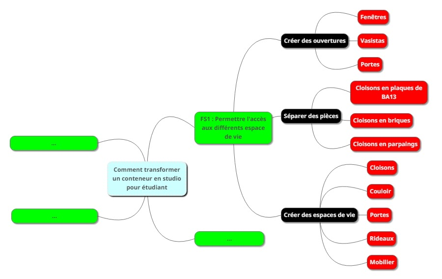
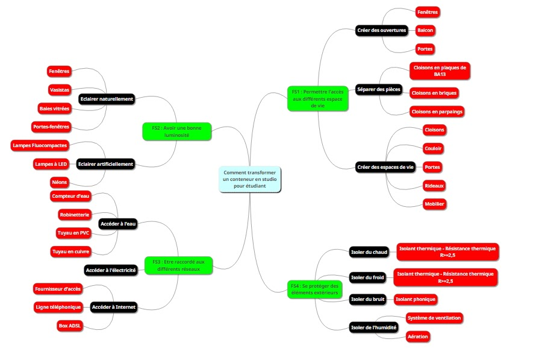

Séance 4: Solutions techniques
Votre équipe d'architectes doit proposer des solutions techniques pour les fonctions techniques retenues.
TRAVAIL DU GROUPE
Pour choisir les solutions techniques, vous devez tenir compte de certaines obligations, aussi appelées contraintes qui limitent vos choix. Elles sont notées dans le cahier des charges qu'on a fait avant.
Pour organiser vos idées, vous présenterez vos résultats avec un logiciel de carte mentale (heuristique) , utilisez le logiciel mindmup
Comment procéder ?
- Pour FS1 : Permettre l'accès aux différents espaces de vie
Déjà traitée pour l'exemple, voir le coup de pouce (ci-dessous).
- Pour FS2 : Avoir une bonne luminosité quelque soit l'heure
Utiliser Internet pour choisir des types de lampes et des types d'ouvertures qui respectent les contraintes du cahier des charges.
- Pour FS3 : Se protéger des éléments extérieurs
Utiliser le document sur les matériaux isolants et choisissez en un qui respecte les contraintes du cahier des charges.
- Pour FS4 : Etre raccordé à différents réseaux
Utiliser le document sur les réseaux et choisissez pour chaque réseau, l'ensemble du matériel qu'il nous faudra pour raccorder notre conteneur.
Compléter votre carte mentale avec tous vos choix.
Travailler en groupe, répartir le travail à faire pour être plus efficace et gagner du temps.
Certains groupes présenteront leur carte mentale à l'oral .
Coup de pouce
Si vous avez besoin d'aide ...
Carte mentale : Fonction contrainte FS1 Permettre l'accès aux différents espaces -> les solutions techniques correspondantes

Restitution

🧠 Teste tes connaissances
Réponds aux questions puis clique sur « Vérifier » — la correction s'affiche aussitôt.
1. Comment appelle-t-on les obligations qui limitent les choix de solutions techniques ?
2. Quel type de logiciel est proposé pour organiser et présenter les solutions techniques ?
3. Pour la fonction FS3 « Se protéger des éléments extérieurs », que faut-il choisir ?